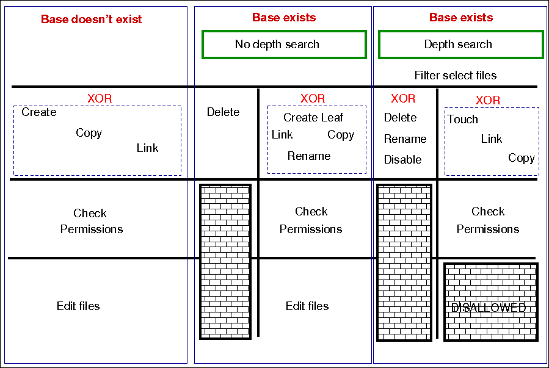

files
Files promises are an umbrella for attributes of files. Operations fall basically into three categories: create, delete and edit.
files:
"/path/file_object"
perms => perms_body,
... ;
Prior to version 3, file promises were scattered into many different
types, including files, tidy, copy, and links. File handling in
CFEngine 3 uses regular expressions everywhere for pattern matching. The
old 'wildcard/globbing' expressions \* and ? are deprecated, and
everything is based consistently on Perl Compatible Regular Expressions.
There is a natural ordering in file processing that obviates the need
for the actionsequence. For example, the trick of using multiple
actionsequence items with different classes.
actionsequence = ( ... files.one .. files.two )
can now be handled more elegantly using bundles. The natural ordering uses that fact that some operations are mutually exclusive and that some operations do not make sense in reverse order. For example, editing a file and then copying onto it would be nonsense. Similarly, you cannot both remove a file and rename it.
File copying
Copying is 'backwards'. Instead of the default object being source and the option being the destination, in CFEngine 3 the destination is paramount and the source is an option. This is because the model of voluntary cooperation tells us that it is the object that is changed, which is the agent making the promise. One cannot force change onto a destination with CFEngine, one can only invite change from a source.
Normal ordering of promise attributes
CFEngine has no 'action sequence'. Ordering of operations has, in most cases, a natural ordering that is assumed by the agent. For example, 'delete then create' (normal ordering) makes sense, but 'create then delete' does not. This sort of principle can be extended to deal with all aspects of file promises.
The diagram below shows the ordering. Notice that the same ordering applies regardless of file type (plain-file or directory). Note also that file editing is done "atomically".

The pseudo-code for this logic is shown in the diagram and below:
for each file promise-object
{
if (depth_search)
do
DepthSearch (HandleLeaf)
else
(HandleLeaf)
done
}
HandleLeaf()
{
Does leaf-file exist?
NO: create
YES: rename,delete,touch,
do
for all servers in {localhost, @(servers)}
{
if (server-will-provide)
do
if (depth_search)
embedded source-depth-search (use file source)
break
else
(use file source)
break
done
done
}
done
Do all links (always local)
Check Permissions
Do edits
}
Depth searches (aka 'recursion') during searches
Recursion is called "depth-search", and CFEngine uses the 'globbing' symbols with standard regular expressions:
/one/.*/two/thr.*/four
When searching for hidden files (files with names starting with a
'.') or files with specific extensions, you should take care to escape
the dot (e.g., \.cshrc or .*\.txt) when you wish it to mean a
literal character and not the any character interpretation provided by
regular expression interpretation.
When doing a recursive search, the files '.' and '..' are never
included in the matched files, even if the regular expression in the
leaf_name specifically allows them.
The filename /dir/ect/ory/. is a special case used with the create
attribute to indicate the directory named /dir/ect/ory and not any of
the files under it. If you really want to specify a regular expression
that matches any single-character filename, use /dir/ect/ory/[\w\W] as
your promise regular expression (you can't use /dir/ect/ory/[^/], see
below for an explanation.
Depth search refers to a search for file objects that starts from the one or more matched base-paths as shown in the example above.
Filenames and regular expressions
CFEngine allows regular expressions within filenames, but only after first doing some sanity checking to prevent some readily avoidable problems. The biggest rule you need to know about filenames and regular expressions is that all regular expressions in filenames are bounded by directory separators, and that each component expression is anchored between the directory separators. In other words, CFEngine splits up any file paths into its component parts, and then it evaluates any regular expressions at a component-level.
What this means is that the path /tmp/gar.* will only match filenames
like /tmp/gar, /tmp/garbage and /tmp/garden. It will not match
filename like /tmp/gar/baz; because even though the .* in a regular
expression means "zero or more of any character", CFEngine restricts
that to mean "zero or more of any character in a path component".
Correspondingly, CFEngine also restricts where you can use the /
character. For example, you cannot use it in a character class like
[^/] or in a parenthesized or repeated regular expression component.
This means that regular expressions that include "optional directory
components" will not work. You cannot have a files promise to tidy the
directory (/usr)?/tmp. Instead, you need to be more verbose and specify
/usr/tmp|/tmp. Potentially more efficient would be a declarative
approach. First, create an slist that contains both the strings /tmp
and /usr/tmp and then allow CFEngine to iterate over the list.
This also means that the path /tmp/.*/something will match files such
as /tmp/abc/something or /tmp/xyzzy/something. However, even though the
pattern .* means "zero or more of any character (except /)", CFEngine
matches files bounded by directory separators. So even though the
pathname /tmp//something is technically the same as the pathname
/tmp/something, the regular expression /tmp/.*/something will not
match on the case of /tmp//something (or /tmp/something).
Promises involving regular expressions
CFEngine can only keep (or repair, or fail to keep) a promise on files
which actually exist. If you make a promise based on a wildcard match,
then the promise is only ever attempted if the match succeeds. However,
if you make a promise containing a recursive search that includes a
wildcard match, then the promise can be kept or repaired, provided that
the directory specified in the promise exists. Consider the following
two examples, which assume that there first exist files named /tmp/gar,
/tmp/garbage and /tmp/garden. Initially, the two promises look like they
should do the same thing; but there is a subtle difference:
bundle agent foobaz
{
files:
"/tmp/gar.*"
delete => tidy,
classes => if_ok("done");
}
body classes if_ok(x)
{
promise_repaired => { "$(x)" };
promise_kept => { "$(x)" };
}
|
bundle agent foobaz
{
files:
"/tmp"
delete => tidy,
depth_search => recurse("0"),
file_select => gars,
classes => if_ok("done");
}
body file_select gars
{
leaf_name => { "gar.*" };
file_result => "leaf_name";
}
body classes if_ok(x)
{
promise_repaired => { "$(x)" };
promise_kept => { "$(x)" };
}
|
In the first example, when the configuration containing this promise is
first executed, any file starting with "gar" that exists in the /tmp
directory will be removed, and the done class will be set. However, when
the configuration is executed a second time, the pattern /tmp/gar.*
will not match any files, and that promise will not even be attempted
(and, consequently the done class will not be set).
In the second example, when the configuration containing this promise is
first executed, any file starting with "gar" that exists in the /tmp
directory will also be removed, and the done class will also be set. The
second time the configuration is executed, however, the promise on the
/tmp directory will still be executed (because /tmp of course still
exists), and the done class will be set, because all files matching
the file_select attribute have been deleted from that directory.
Local and remote searches
There are two distinct kinds of depth search:
- A local search over promiser agents.
- A remote search over provider agents.
When we are copying or linking to a file source, it is the search over the remote source that drives the content of a promise (the promise is a promise to use what the remote source provides). In general, the sources are on a different device to the images that make the promises. For all other promises, we search over existing local objects.
If we specify depth search together with copy of a directory, then the implied remote source search is assumed, and it is made after the search over local base-path objects has been made. If you mix complex promise body operations in a single promise, this could lead to confusion about the resulting behavior, and a warning is issued. In general it is not recommended to mix searches without a full understanding of the consequences, but this might occasionally be useful.
Depth search is not allowed with edit_line promises.
Platform notes
Platforms that support named sockets (basically all Unix systems, but
not Windows), may not work correctly when using a files promise to
alter such a socket. This is a known issue, documented in
CFE-1782, and
CFE-1830.
Attributes
Common Promise Attributes
Common attributes are available to all promise types. Full details for common attributes can be found in the Common Promise Attributes section of the Promise Types page. The common attributes are as follows:
action
classes
comment
depends_on
handle
if
meta
with
acl
Type: body acl
See also: Common Body Attributes
History:
- perms body no longer required for base directory to be considered by files promise 3.7.5, 3.10.0
aces
Description: Native settings for access control entry are defined by 'aces'. POSIX ACL are available in CFEngine Community starting with 3.4.0. NTFS ACL are available in with CFEngine Enterprise.
Type: slist
Allowed input range:
((user|group):[^:]+:[-=+,rwx()dtTabBpcoD]*(:(allow|deny))?)|((all|mask):[-=+,rwx()]*(:(allow|deny))?)
Form of the permissions is as follows:
aces = {
"user:uid:mode[:perm_type]", ...,
"group:gid:mode[:perm_type]", ...,
"all:mode[:perm_type]"
};
userA valid username identifier for the system and cannot be empty. However,
usercan be set to*as a synonym for the entity that owns the file system object (e.g.user:*:r).Notes:
- The user id is not a valid alternative.
- This ACL is required when
acl_methodis set tooverwrite.
-
A valid user identifier for the system and cannot be empty. However,
uidcan be set to*as a synonym for the entity that owns the file system object (e.g.user:*:r).Note: The username is not a valid alternative.
groupA valid group identifier for the system and cannot be empty. However,
groupcan be set to*as a synonym for the group that owns the POSIX file system object (group:*:rwx).Notes:
- The group id is not a valid alternative.
- This ACL is required when
acl_methodis set tooverwrite.
gidA valid group identifier for the system and cannot be empty. However, in some ACL types,
gidcan be set to*to indicate a special group (e.g. in POSIX this refers to the file group).Note: The group name is not a valid alternative.
allIndicates that the line applies to every user.
Note: This ACL is required when
acl_methodis set tooverwrite.maskA valid mask identifier (e.g.
mask:rwx). In essence the mask is an upper bound of the permissions that any entry in the group class will grant. Whenacl_methodisoverwriteif mask is not supplied, it will default tomask:rwx).-
One or more strings
op|perms|(nperms); a concatenation ofop,permsand optionally (nperms) separated with commas (e.g.+rx,-w(s)).modeis parsed from left to right. opSpecifies the operation on any existing permissions, if the defined ACE already exists.
opcan be =, empty, + or -. = or empty sets the permissions to the ACE as stated. + adds and - removes the permissions from any existing ACE.nperms(optional)Specifies file system specific (native) permissions. Only valid if
acl_typeis defined and will only be enforced if the file object is stored on a file system supporting this ACL type. For example,npermswill be ignored ifacl_type:ntfsand the object is stored on a file system not supporting NTFS ACLs. Valid values fornpermsvaries with different ACL types. Whenacl_typeis set tontfs, the valid flags and their mappings is as follows:CFEngine nperm flag NTFS Special Permission x Execute File / Traverse Folder r Read Data / List Folder t Read Attributes T Read Extended Attributes w Write Data / Create Files a Append Data / Create Folders b Write Attributes B Write Extended Attributes D Delete Sub-folders and Files d Delete p Read Permissions c Change Permissions o Take Ownership perm_type(optional)Can be set to either
allowordeny, and defaults toallow.denyis only valid ifacl_typeis set to an ACL type that support deny permissions. AdenyACE will only be enforced if the file object is stored on a file system supporting the acl type set inacl_type.gperms(generic permissions)A concatenation of zero or more of the characters shown in the table below. If left empty, none of the permissions are set.
Flag Description Semantics on file Semantics on directory r Read Read data, permissions, attributes Read directory contents, permissions, attributes w Write Write data Create, delete, rename subobjects x Execute Execute file Access subobjects Notes
- The
rpermission is not necessary to read an object's permissions and attributes in all file systems. For example, in POSIX, havingxon its containing directory is sufficient. - Capital
Xwhich is supported by thesetfaclcommand is not supported by the acl library, and thus not supported by the acl body.
- The
Example:
body acl template
{
acl_method => "overwrite";
acl_type => "posix";
acl_default => "access";
aces => {
"user:*:r(wwx),-r:allow",
"group:*:+rw:allow",
"mask:x:allow",
"all:r"
};
}
acl_default
Description: The access control list type for the affected file system is determined by acl_default.
Directories have ACLs associated with them, but they also have the ability to inherit an ACL to sub-objects created within them. POSIX calls the former ACL type "access ACL" and the latter "default ACL", and we will use the same terminology.
The constraint acl_default gives control over the default ACL of
directories. The default ACL can be left unchanged (nochange),
empty (clear), or be explicitly specified (specify). In addition, the
default ACL can be set equal to the directory's access ACL (access). This
has the effect that child objects of the directory gets the same access ACL as
the directory.
Type: (menu option)
Allowed input range:
nochange
access
specify
clear
Example:
body acl template
{
acl_method => "overwrite";
acl_type => "posix";
acl_default => "access";
aces => {
"user:*:rwx:allow",
"group:*:+rw:allow",
"mask:rx:allow",
"all:r"
};
}
History: Was introduced in 3.5. Replaces the now deprecated acl_directory_inherit.
acl_inherit
Description: Defines whether the object inherits its ACL from its parent.
Type: (menu option)
Allowed input range:
truefalseyesnoonoffnochange
Notes: This attribute has an effect only on Windows.
acl_method
Description: The acl_method menu option defines the editing method for
an access control list.
When defining an ACL, we can either use an existing ACL as the starting point,
or state all entries of the ACL. If we just care about one entry, say that the
superuser has full access, the method constraint can be set to append,
which is the default. This has the effect that all the existing ACL entries
that are not mentioned will be left unchanged. On the other hand, if method
is set to overwrite, the resulting ACL will only contain the mentioned
entries.
Note: When acl_method is set to overwrite the acl must include the system
owner, group and all. For example user:*:rwx, group:*:rx, and all:---.
Type: (menu option)
Allowed input range:
append
overwrite
Example:
body acl template
{
acl_method => "overwrite";
acl_type => "posix";
aces => { "user:*:rw:allow", "group:*:+r:allow", "all:"};
}
acl_type
Description: The acl_type menu option defines the access control list
type for the affected file system.
ACLs are supported on multiple platforms, which may have different sets of
available permission flags. By using the constraint acl_type, we
can specify which platform, or ACL API, we are targeting with the ACL.
The default, generic, is designed to work on all supported platforms.
However, if very specific permission flags are required, like Take
Ownership on the NTFS platform, we must set acl_type to indicate the target
platform. Currently, the supported values are posix and ntfs.
Type: (menu option)
Allowed input range:
generic
posix
ntfs
Example:
body acl template
{
acl_type => "ntfs";
aces => { "user:Administrator:rwx(po)", "user:Auditor:r(o)"};
}
specify_default_aces
Description: The slist specify_default_aces specifies the native
settings for access control entry.
specify_default_aces (optional) is a list of access control entries that are
set on child objects. It is also parsed from left to right and
allows multiple entries with same entity-type and id. Only valid if
acl_default is set to specify.
This is an ACL which makes explicit setting for the acl inherited by new objects within a directory. It is included for those implementations that do not have a clear inheritance policy.
Type: slist
Allowed input range:
((user|group):[^:]+:[-=+,rwx()dtTabBpcoD]*(:(allow|deny))?)|((all|mask):[-=+,rwx()]*(:(allow|deny))?)
Example:
body acl template
{
specify_default_aces => { "all:r" };
}
changes
Type: body changes
See also: Common Body Attributes
hash
Description: The hash menu option defines the type of hash used for change detection.
The best option cross correlates the best two available algorithms known in the OpenSSL library.
Type: (menu option)
Allowed input range:
md5
sha1
sha224
sha256
sha384
sha512
best
Example:
body changes example
{
hash => "md5";
}
report_changes
Description: Specify criteria for change warnings using the report_changes menu option.
Files can change in permissions and contents, i.e. external or internal attributes. If all is chosen all attributes are checked.
Type: (menu option)
Allowed input range:
all
stats
content
none
Example:
body changes example
{
report_changes => "content";
}
update_hashes
Description: Use of update_hashes determines whether hash values should
be updated immediately after a change.
If this is positive, file hashes should be updated as soon as a change is registered so that multiple warnings are not given about a single change. This applies to addition and removal too.
Type: boolean
Example:
body changes example
{
update_hashes => "true";
}
report_diffs
This feature requires CFEngine Enterprise.
Description: Setting report_diffs determines whether to generate reports
summarizing the major differences between individual text files.
If true, CFEngine will log a 'diff' summary of major changes to the files. It is not permitted to combine this promise with a depth search, since this would consume a dangerous amount of resources and would lead to unreadable reports.
The feature is intended as a informational summary, not as a version control function suitable for transaction control. If you want to do versioning on system files, you should keep a single repository for them and use CFEngine to synchronize changes from the repository source. Repositories should not be used to attempt to capture random changes of the system.
Limitations: Diffs will not be reported for files that are larger than 80MB in size. Diffs will not be reported if the number of lines between the first and last change exceed 4500. Diffs for binary files are not generated. Files are considered binary files if control character 0-32 excluding 9, 10, 13, and 32, or 127 are found in the file.
Type: boolean
Example:
body changes example
{
report_diffs => "true";
}
copy_from
Type: body copy_from
The copy_from body specifies the details for making remote copies.
Note: For improved performance, connections from cf-agent to cf-serverd are re-used. Currently connection caching is done per pass in each bundle activation.
See also: Common Body Attributes
source
Description: The source string represents the reference source file from which to copy. For remote copies this refers to the file name on the remote server.
Type: string
Allowed input range: .+
Example:
body copy_from example
{
source => "/path/to/source";
}
servers
Description: The servers slist names servers in order of preference from which to copy. The servers are tried in order until one of them succeeds.
Type: slist
Allowed input range: [A-Za-z0-9_.:-]+
Example:
body copy_from example
{
servers => { "primary.example.org", "secondary.example.org",
"tertiary.other.domain" };
}
collapse_destination_dir
Description: Use collapse_destination_dir to flatten the directory hierarchy during copy. All the files will end up in the root destination directory.
Under normal operations, recursive copies cause CFEngine to track
subdirectories of files. So, for instance, if we copy recursively from src to
dest, then src/subdir/file will map to dest/subdir/file.
By setting this option to true, the promiser destination directory promises to
aggregate files searched from all subdirectories into
itself; in other words, a single destination directory. So src/subdir/file will map to dest/file for any subdir.
Type: boolean
Example:
body copy_from mycopy(from,server)
{
source => "$(from)";
servers => { "$(server)" };
collapse_destination_dir => "true";
}
compare
Description: The menu option policy compare is used for comparing source
and image file attributes.
The default copy method is mtime (modification time) or ctime (change
time), meaning that the source file is copied to the destination (promiser)
file, if the source file has been modified (content, permissions, ownership,
moved to a different file system) more recently than the destination. Note this
is special behavior when no comparison is specified as generally only a single
comparison can be used.
Type: (menu option)
Allowed input range:
CFEngine copies the file if the modification time of the source file is more recent than that of the promised file
CFEngine copies the file if the creation time of the source file is more recent than that of the promised file
CFEngine copies the file if the modification time or creation time of the source file is more recent than that of the promised file. If the times are equal, a byte-for-bye comparison is done on the files to determine if it needs to be copied.
exists
CFEngine copies the file if the promised file does not already exist.
binary
CFEngine copies the file if they are both plain files and a
byte-for-byte comparison determines that they are different. If both
are not plain files, CFEngine reverts to comparing the mtime and
ctime of the files. If the source file is on a different machine
(e.g. network copy), then hash is used instead to reduce network
bandwidth.
CFEngine copies the file if they are both plain files and a message digest comparison indicates that the files are different. In Enterprise versions of CFEngine version 3.1.0 and later, SHA256 is used as a message digest hash to conform with FIPS; in older Enterprise versions of CFEngine and all Community versions, MD5 is used.
digesta synonym forhash
Default value: mtime or ctime differs
Example:
body copy_from example
{
compare => "digest";
}
copy_backup
Description: Menu option policy for file backup/version control
Determines whether a backup of the previous version is kept on the system. This should be viewed in connection with default_repository in body agent control, since a defined repository affects the location at which the backup is stored.
Type: (menu option)
Allowed input range:
true
false
timestamp
Default value: true
Example:
body copy_from example
{
copy_backup => "timestamp";
}
See also: Common Body Attributes, default_repository in body agent control, edit_backup in body edit_defaults
encrypt
Description: The encrypt menu option policy describes whether to use
encrypted data stream to connect to remote hosts.
Client connections are encrypted with using a Blowfish randomly generated session key. The initial connection is encrypted using the public/private keys for the client and server hosts.
Type: boolean
Default value: false
Example:
body copy_from example
{
servers => { "remote-host.example.org" };
encrypt => "true";
}
Note: When used with protocol_version 2 or greater this attribute is a
noop as the entire session is encrypted.
See also: protocol_version, ifencrypted, protocol_version, tls_ciphers, tls_min_version, allowciphers, allowtlsversion
check_root
Description: The check_root menu option policy checks permissions on the
root directory when copying files recursively by depth_search.
This flag determines whether the permissions of the root directory should be set from the root of the source. The default is to check only copied file objects and subdirectories within this root (false).
Type: boolean
Example:
body copy_from example
{
check_root => "true";
}
copylink_patterns
Description: The copylink_patterns slist of patterns are matching files
that should be copied instead of linked.
The matches are performed on the last node of the filename; in other words, the file without its path. As Windows does not support symbolic links, this feature is not available there.
Type: slist
Allowed input range: (arbitrary string)
Example:
body copy_from example
{
copylink_patterns => { "special_node1", "other_node.*" };
}
copy_size
Description: The integers specified in copy_size determines the range
for the size of files that may be copied.
The use of the irange function is optional. Ranges may also be specified as
comma separated numbers.
Type: irange[int,int]
Allowed input range: 0,inf
Default value: any size range
Example:
body copy_from example
{
copy_size => irange("0","50000");
}
See also: Function: irange()
findertype
Description: The findertype menu option policy describes the default finder type on MacOSX.
This applies only to the Mac OS X variants.
Type: (menu option)
Allowed input range:
MacOSX
Example:
body copy_from example
{
findertype => "MacOSX";
}
linkcopy_patterns
Description: The linkcopy_patterns contains patterns for matching files
that should be replaced with symbolic links.
The pattern matches the last node filename; in other words, without the absolute path. Windows only supports hard links.
Type: slist
Allowed input range: (arbitrary string)
Example:
body copy_from mycopy(from)
{
source => "$(from)";
linkcopy_patterns => { ".*" };
}
See Also: link_type.
link_type
Description: The link_type menu option policy contains the type of links
to use when copying.
Users are advised to be wary of 'hard links' (see Unix manual pages for the ln command). The behavior of non-symbolic links is often precarious and unpredictable. However, hard links are the only supported type by Windows.
Note that symlink is synonymous with absolute links, which are different from relative links. Although all of these are symbolic links, the nomenclature here is defined such that symlink and absolute are equivalent. When verifying a link, choosing 'relative' means that the link must be relative to the source, so relative and absolute links are mutually exclusive.
Type: (menu option)
Allowed input range:
symlink
hardlink
relative
absolute
Default value: symlink
Example:
body copy_from example
{
link_type => "symlink";
source => "/tmp/source";
}
missing_ok
Description: Treat a missing source file as a promise kept.
This allows you to override the promise outcome when a source file is missing.
When set to true if the promise is a remote copy and there is a failure to
connect the promise will not be considered kept. If the agent is able to request
the file and the file is missing the promise will be kept.
Type: boolean
Default value: false
Example:
bundle agent main
{
files:
"/tmp/copied_from_missing_ok"
copy_from => missing_ok( "/var/cfengine/masterfiles/missing" ),
classes => results("bundle", "copy_from_missing_ok");
reports:
"$(with)"
with => string_mustache( "", sort( classesmatching( "copy_from_.*" ), lex));
}
body copy_from missing_ok( file_path )
{
source => "$(file_path)";
missing_ok => "true";
# Run with these classes to try remote copies
remote_copy_self::
servers => { "127.0.0.1" };
remote_copy_policy_hub::
servers => { $(sys.policy_hub) };
}
body classes results(scope, class_prefix)
{
scope => "$(scope)";
promise_kept => { "$(class_prefix)_reached",
"$(class_prefix)_kept" };
promise_repaired => { "$(class_prefix)_reached",
"$(class_prefix)_repaired" };
repair_failed => { "$(class_prefix)_reached",
"$(class_prefix)_error",
"$(class_prefix)_not_kept",
"$(class_prefix)_failed" };
repair_denied => { "$(class_prefix)_reached",
"$(class_prefix)_error",
"$(class_prefix)_not_kept",
"$(class_prefix)_denied" };
repair_timeout => { "$(class_prefix)_reached",
"$(class_prefix)_error",
"$(class_prefix)_not_kept",
"$(class_prefix)_timeout" };
}
In the above example /tmp/copied_from_missing_ok promises to be a copy of the local file
/var/cfengine/masterfiles/missing. In the missing_ok copy_from body
missing_ok is set to true. This causes the promise to be considered kept if
the source file is missing. The results classes body is used to define bundle
scoped classes prefixed with copy_from_missing_ok. The reports promise
outputs a sorted list of the classes defined starting with copy_from_.
R: [
"copy_from_missing_ok_kept",
"copy_from_missing_ok_reached"
]
We can see in the output that the class defined for copying a local file that does not exist is seen to be a promise kept. ```
This policy can be found in
/var/cfengine/share/doc/examples/missing_ok.cf
and downloaded directly from
github.
Notes:
This can be useful for opportunistically coping files that are not necessarily required or available at all times. For example if there is a host specific data that each host attempts to copy this will allow you to not have many promise failures when a host does not have any data prepared for it.
See also: seed_cp in the MPF, compare in body copy_from
History:
- Introduced in 3.12.0
force_update
Description: The force_update menu option policy instructs whether to
always force copy update.
Warning: this is a non-convergent operation. Although the end point might stabilize in content, the operation will never quiesce. Use of this feature is not recommended except in exceptional circumstances since it creates a busy-dependency. If the copy is a network copy, the system will be disturbed by network disruptions.
Type: boolean
Default value: false
Example:
body copy_from example
{
force_update => "true";
}
force_ipv4
Description: The force_ipv4 menu option policy can determine whether to use ipv4 on an ipv6 enabled network.
IPv6 should be harmless to most users unless you have a partially or mis-configured setup.
Type: boolean
Default value: false
Example:
body copy_from example
{
force_ipv4 => "true";
}
portnumber
Description: Setting portnumber determines the port number to connect to
on a server host.
The standard or registered port number is tcp/5308. CFEngine does not presently use its registered udp port with the same number, but this could change in the future.
Type: int
Allowed input range: 1,65535
Example:
body copy_from example
{
portnumber => "5308";
}
preserve
Description: Setting the preserve menu option policy determines whether
to preserve file permissions on copied files.
This ensures that the destination file (promiser) gets the same file permissions as the source. For local copies, all attributes are preserved, including ACLs and SELinux security contexts. For remote copies, only Unix mode is preserved.
Note: This attribute will not preserve ownership (user/group).
Type: boolean
Default value: false
Example:
body copy_from example
{
preserve => "true";
}
History: Version 3.1.0b3,Nova 2.0.0b1 (2010)
protocol_version
Description: Defines the protocol to use for the outgoing connection in this copy operation.
Type: (menu option)
Allowed input range:
1classic2tls3cookielatest
Default value: classic
Note: The value here will override the setting from body common control.
See also: protocol_version in
body common, allowlegacyconnects
History: Introduced in CFEngine 3.6.0
purge
Description: The purge menu option policy instructs on whether to purge
files on client that do not match files on server when a depth_search is
used.
Purging files is a potentially dangerous matter during a file copy it implies that any promiser (destination) file which is not matched by a source will be deleted. Since there is no source, this means the file will be irretrievable. Great care should be exercised when using this feature.
Note this attribute only works when combined with depth_search and purging
will also delete backup files generated during the file copying if copy_backup
is set to true.
Type: boolean
Default value: false
Example:
body copy_from example
{
purge => "true";
}
stealth
Description: Setting the stealth menu option policy determines whether
to preserve time stamps on copied files. This preserves file access and
modification times on the promiser files.
Type: boolean
Default value: false
Example:
body copy_from example
{
stealth => "true";
}
timeout
Description: The integer set in timeout is the value for the connection
timeout, in seconds.
Type: int
Allowed input range: 1,3600
Default Value: default_timeout
Example:
body copy_from example
{
timeout => "10";
}
See Also: agent default_timeout, cf-runagent timeout
Notes:
cf-serverdwill time out any transfer that takes longer than 10 minutes (this is not currently tunable).
trustkey
Description: The trustkey menu option policy determines whether to trust
public keys from a remote server, if previously unknown.
If the server's public key has not already been trusted, trustkey provides
automated key-exchange.
Note that, as a simple security precaution, trustkey should normally be set
to false. Even though the risks to the client low, it is a good security
practice to avoid key exchange with a server one is not one hundred percent
sure about. On the server-side however, trust is often granted to many clients
or to a whole network in which possibly unauthorized parties might be able to
obtain an IP address. Thus the trust issue is most important on the server
side.
As soon as a public key has been exchanged, the trust option has no effect. A
machine that has been trusted remains trusted until its key is manually
revoked by a system administrator. Keys are stored in WORKDIR/ppkeys.
Type: boolean
Default value: false
Example:
body copy_from example
{
trustkey => "true";
}
type_check
Description: The type_check menu option policy compares file types
before copying.
File types at source and destination should normally match in order for updates to overwrite them. This option allows this checking to be switched off.
Type: boolean
Example:
body copy_from example
{
type_check => "false";
}
verify
Description: The verify menu option policy instructs whether to verify
transferred file by hashing after copy.
Warning: This is a highly resource intensive option, and is not recommended for large file transfers.
Type: boolean
Default value: false
Example:
body copy_from example
{
verify => "true";
}
create
Description: true/false whether to create non-existing file
Directories are created by using the /. to signify a directory type.
Note that, if no permissions are specified, mode 600 is chosen for a
file, and mode 755 is chosen for a directory. If you cannot accept these
defaults, you should specify permissions.
Note that technically, /. is a regular expression. However, it is used
as a special case meaning "directory". See filenames and regular
expressions for a more complete discussion.
Type: boolean
Default value: false
Example:
files:
"/path/plain_file"
create => "true";
"/path/dir/."
create => "true";
Note: In general, you should not use create with copy_from or
link_from in files promises. These latter attributes automatically create
the promised file, and using create may actually prevent the copy or link
promise from being kept (since create acts first, which may affect file
comparison or linking operations).
delete
Type: body delete
See also: Common Body Attributes
dirlinks
Description: Menu option policy for dealing with symbolic links to directories during deletion
Links to directories are normally removed just like any other link or file objects. By keeping directory links, you preserve the logical directory structure of the file system, so that a link to a directory is not removed but is treated as a directory to be descended into.
The value keep instructs CFEngine not to remove directory links. The
values delete and tidy are synonymous, and instruct CFEngine to
remove directory links.
Type: (menu option)
Allowed input range:
delete
tidy
keep
Example:
body delete example
{
dirlinks => "keep";
}
Default value (only if body is present): dirlinks = delete
The default value only has significance if there is a delete body
present. If there is no delete body then files (and directory links)
are not deleted.
rmdirs
Description: true/false whether to delete empty directories during recursive deletion
Type: boolean
Example:
body delete example
{
rmdirs => "true";
}
Note the parent directory of a search is not deleted in recursive deletions. You
must code a separate promise to delete the single parent object. This attribute does not respect include_basedir in depth_search bodies. For an example
see bundle agent rm_rf_depth in the standard library.
Default value (only if body is present): rmdirs = true
The default value only has significance if there is a delete body
present. If there is no delete body then files (and directories) are
not deleted.
depth_search
Description: Apply a promise recursively
When searching recursively from a directory, the promised directory itself is only the anchor point and is not part of the search by default. Set include_basedir to true to include the promised directory in the search.
This should be used in combination with file_select.
Type: body depth_search
See also: Common Body Attributes
depth
Description: Maximum depth level for search
Type: int
Allowed input range: 0,99999999999
Note that the value inf may be used for an unlimited value.
Example:
body depth_search example
{
depth => "inf";
}
exclude_dirs
Description: List of regexes of directory names NOT to include in depth search
Directory names are treated specially when searching recursively through a file system.
Type: slist
Allowed input range: .*
Example:
body depth_search
{
# no dot directories
exclude_dirs => { "\..*" };
}
include_basedir
Description: true/false include the start/root dir of the search results
When checking files recursively (with depth_search) the promiser is a
directory. This parameter determines whether that initial directory
should be considered part of the promise or simply a boundary that marks
the edge of the search. If true, the promiser directory will also
promise the same attributes as the files inside it. rmdirs in delete bodies /ignore/ this attribute. A separate files promise must be made in order to delete the top level directory.
Type: boolean
Example:
rm -rf /tmp/CFE-3217
mkdir -p /tmp/CFE-3217/test-delete-nobasedir/one/two/three
mkdir -p /tmp/CFE-3217/test-delete/one/two/three
mkdir -p /tmp/CFE-3217/test-perms/one/two/three
mkdir -p /tmp/CFE-3217/test-perms-nobasedir/one/two/three
touch /tmp/CFE-3217/test-delete-nobasedir/one/two/three/file
touch /tmp/CFE-3217/test-delete/one/two/three/file
touch /tmp/CFE-3217/test-perms/one/two/three/file
touch /tmp/CFE-3217/test-perms-nobasedir/one/two/three/file
touch /tmp/CFE-3217/test-delete-nobasedir/file
touch /tmp/CFE-3217/test-delete/file
touch /tmp/CFE-3217/test-perms/file
touch /tmp/CFE-3217/test-perms-nobasedir/file
bundle agent main
{
files:
"/tmp/CFE-3217/test-delete/." -> { "CFE-3217", "CFE-3218" }
depth_search => aggressive("true"),
file_select => all,
delete => tidy,
comment => "include_basedir => 'true' will not result in thd promised directory being removed.";
"/tmp/CFE-3217/test-delete-nobasedir/."
depth_search => aggressive("false"),
file_select => all,
delete => tidy,
comment => "include_basedir => 'false' will not result in thd promised directory being removed.";
"/tmp/CFE-3217/test-perms/."
perms => m(555),
depth_search => aggressive("true"),
file_select => all,
comment => "include_basedir => 'true' results in thd promised directory having permissions managed as well.";
"/tmp/CFE-3217/test-perms-nobasedir/." -> { "CFE-3217" }
perms => m(555),
depth_search => aggressive("false"),
file_select => all,
comment => "include_basedir => 'false' results in thd promised directory not having permissions managed.";
reports:
"delete => tidy";
"/tmp/CFE-3217/test-delete present despite include_basedir => 'true'"
if => isdir("/tmp/CFE-3217/test-delete");
"/tmp/CFE-3217/test-delete-nobasedir present as expected with include_basedir => 'false'"
if => isdir("/tmp/CFE-3217/test-delete-nobasedir");
"/tmp/CFE-3217/test-delete absent, unexpectedly"
unless => isdir("/tmp/CFE-3217/test-delete");
"/tmp/CFE-3217/test-delete-nobasedir absent, unexpectedly"
unless => isdir("/tmp/CFE-3217/test-delete-nobasedir");
"perms => m(555)";
"/tmp/CFE-3217/test-perms $(with), as expected with include_basedir => 'true'"
with => filestat( "/tmp/CFE-3217/test-perms", modeoct ),
if => strcmp( filestat( "/tmp/CFE-3217/test-perms", modeoct ), "40555" );
"/tmp/CFE-3217/test-perms-nobasedir $(with), not 555, as expected with include_basedir => 'false'"
with => filestat( "/tmp/CFE-3217/test-perms-nobasedir", modeoct ),
unless => strcmp( filestat( "/tmp/CFE-3217/test-perms-nobasedir", modeoct ), "40555" );
}
body depth_search aggressive(include_basedir)
{
depth => "inf";
# exclude_dirs => { @(exclude_dirs) };
include_basedir => "$(include_basedir)";
# include_dirs => { @(include_dirs) };
# inherit_from => "$(inherit_from)";
# meta => "$(meta)"; meta attribute inside the depth_search body? It's not documented. TODO!?
rmdeadlinks => "false"; # Depth search removes dead links, this seems like something that should be in delete body. TODO!?
traverse_links => "true";
xdev => "true";
}
Inlined bodies from the stdlib in the Masterfiles Policy Framework
body file_select all
{
leaf_name => { ".*" };
file_result => "leaf_name";
}
body delete tidy
{
dirlinks => "delete";
rmdirs => "true";
}
body perms m(mode)
{
mode => "$(mode)";
}
info: Deleted file '/tmp/CFE-3217/test-delete/./one/two/three/file'
info: Deleted directory '/tmp/CFE-3217/test-delete/./one/two/three'
info: Deleted directory '/tmp/CFE-3217/test-delete/./one/two'
info: Deleted directory '/tmp/CFE-3217/test-delete/./one'
info: Deleted file '/tmp/CFE-3217/test-delete/./file'
info: Deleted file '/tmp/CFE-3217/test-delete-nobasedir/./one/two/three/file'
info: Deleted directory '/tmp/CFE-3217/test-delete-nobasedir/./one/two/three'
info: Deleted directory '/tmp/CFE-3217/test-delete-nobasedir/./one/two'
info: Deleted directory '/tmp/CFE-3217/test-delete-nobasedir/./one'
info: Deleted file '/tmp/CFE-3217/test-delete-nobasedir/./file'
info: Object '/tmp/CFE-3217/test-perms-nobasedir/./file' had permission 0664, changed it to 0555
R: delete => tidy
R: /tmp/CFE-3217/test-delete present despite include_basedir => 'true'
R: /tmp/CFE-3217/test-delete-nobasedir present as expected with include_basedir => 'false'
R: perms => m(555)
R: /tmp/CFE-3217/test-perms 40555, as expected with include_basedir => 'true'
R: /tmp/CFE-3217/test-perms-nobasedir 40775, not 555, as expected with include_basedir => 'false'
This policy can be found in
/var/cfengine/share/doc/examples/files_depth_search_include_basedir.cf
and downloaded directly from
github.
See also: rm_rf, rm_rf_depth from the standard library.
include_dirs
Description: List of regexes of directory names to include in depth search
This is the complement of exclude_dirs.
Type: slist
Allowed input range: .*
Example:
body depth_search example
{
include_dirs => { "subdir1", "subdir2", "pattern.*" };
}
rmdeadlinks
Description: true/false remove links that point to nowhere
A value of true determines that links pointing to files that do not exist should be deleted; or kept if set to false.
Type: boolean
Default value: false
Example:
body depth_search example
{
rmdeadlinks => "true";
}
traverse_links
Description: true/false traverse symbolic links to directories
If this is true, cf-agent will treat symbolic links to directories as
if they were directories. Normally this is considered a potentially
dangerous assumption and links are not traversed.
Type: boolean
Default value: false
Example:
body depth_search example
{
traverse_links => "true";
}
xdev
Description: When true files and directories on different devices from the promiser will be excluded from depth_search results.
Type: boolean
Default value: false
Example:
body depth_search example
{
xdev => "true";
}
edit_defaults
Type: body edit_defaults
See also: Common Body Attributes
edit_backup
Description: Menu option for backup policy on edit changes
Type: (menu option)
Allowed input range:
true
false
timestamp
rotate
Default value: true
Example:
A value of true (the default behavior) will result in the agent retaining the
previous version of the file suffixed with .cf-before-edit.
body edit_defaults backup( edit_backup )
{
edit_backup => "$(edit_backup)";
}
bundle agent main
{
files:
"/tmp/example_edit_backup_true"
create => "true";
"/tmp/example_edit_backup_true"
edit_line => insert_lines("Hello World"),
edit_defaults => backup("true");
vars:
"example_files" slist => sort(lsdir( "/tmp/", "example_edit_backup_true.*", false), lex);
reports:
"$(example_files)";
}
Outputs:
R: example_edit_backup_true
R: example_edit_backup_true.cf-before-edit
A value of timestamp will result in the original file be suffixed with the
epoch and the canonified form of the date when the file was changed followed by
.cf-before-edit. For example
_1511292441_Tue_Nov_21_13_27_22_2017.cf-before-edit.
body edit_defaults backup( edit_backup )
{
edit_backup => "$(edit_backup)";
}
bundle agent main
{
files:
"/tmp/example_edit_backup_timestamp"
create => "true";
"/tmp/example_edit_backup_timestamp"
edit_line => insert_lines("Hello World"),
edit_defaults => backup("timestamp");
vars:
"example_files" slist => lsdir( "/tmp/", "example_edit_backup_timestamp.*", false);
reports:
"$(example_files)";
}
Outputs:
R: example_edit_backup_timestamp
R: example_edit_backup_timestamp_1511300904_Tue_Nov_21_15_48_25_2017.cf-before-edit
A value of false will result in no retention of the original file.
A value of rotate will result in the original file be suffixed with
.cf-before-edit followed by an integer representing the nth previous version
of the file. The number of rotations is managed by the rotate attribute in
edit_defaults.
body edit_defaults backup( edit_backup )
{
edit_backup => "$(edit_backup)";
rotate => "2";
}
bundle agent main
{
files:
"/tmp/example_edit_backup_rotate"
create => "true";
"/tmp/example_edit_backup_rotate"
edit_line => insert_lines("Hello World"),
edit_defaults => backup("rotate");
"/tmp/example_edit_backup_rotate"
handle => "edit_2",
edit_line => insert_lines("Goodbye"),
edit_defaults => backup("rotate");
vars:
"example_files" slist => lsdir( "/tmp/", "example_edit_backup_rotate.*", false);
reports:
"$(example_files)";
}
Outputs:
R: example_edit_backup_rotate
R: example_edit_backup_rotate.cf-before-edit.1
R: example_edit_backup_rotate.cf-before-edit.2
See also: default_repository in body agent control, copy_backup in body copy_from, rotate in body edit_defaults
empty_file_before_editing
Description: Baseline memory model of file to zero/empty before commencing promised edits.
Emptying a file before reconstructing its contents according to a fixed recipe allows an ordered procedure to be convergent.
Type: boolean
Default value: false
Example:
body edit_defaults example
{
empty_file_before_editing => "true";
}
inherit
Description: If true this causes the sub-bundle to inherit the private classes of its parent
Type: boolean
Example:
bundle agent name
{
methods:
"group name" usebundle => my_method,
inherit => "true";
}
body edit_defaults example
{
inherit => "true";
}
History: Was introduced in 3.4.0, Enterprise 3.0.0 (2012)
Default value: false
Notes:
The inherit constraint can be added to the CFEngine code in two
places: for edit_defaults and in methods promises. If set to true,
it causes the child-bundle named in the promise to inherit only the
classes of the parent bundle. Inheriting the variables is unnecessary as
the child can always access the parent's variables by a qualified
reference using its bundle name. For example, $(bundle.variable).
max_file_size
Description: Do not edit files bigger than this number of bytes
max_file_size is a local, per-file sanity check to make sure the file
editing is sensible. If this is set to zero, the check is disabled and
any size may be edited. The default value of max_file_size is
determined by the global control body setting whose default value is
100k.
Type: int
Allowed input range: 0,99999999999
Example:
body edit_defaults example
{
max_file_size => "50K";
}
recognize_join
Description: Join together lines that end with a backslash, up to 4kB limit
If set to true, this option allows CFEngine to process line based files with backslash continuation. The default is to not process continuation backslashes.
Back slash lines will only be concatenated if the file requires editing, and will not be restored. Restoration of the backslashes is not possible in a meaningful and convergent fashion.
Type: boolean
Default value: false
Example:
files:
"/tmp/test_insert"
create => "true",
edit_line => Insert("$(insert.v)"),
edit_defaults => join;
}
#
body edit_defaults join
{
recognize_join => "true";
}
rotate
Description: How many backups to store if 'rotate' edit_backup
strategy is selected. Defaults to 1
Used for log rotation. If the file is named foo and the rotate attribute is set to 4, as above, then initially foo is copied to foo.1 and the old file foo is zeroed out. In other words, the inode of the original logfile does not change, but the original logfile will be empty after the rotation is complete.
The next time the promise is executed, foo.1 will be renamed foo.2, foo is again copied to foo.1 and the old file foo is again zeroed out.
A promise may typically be executed as guarded by time-based or file-size-based classes. Each time the promise is executed the files are copied/zeroed or rotated (as above) until there are rotate numbered files, plus the one "main" file. In the example above, the file foo.3 will be renamed foo.4, but the old version of the file foo.4 will be deleted (that is, it "falls off the end" of the rotation).
Type: int
Allowed input range: 0,99
Example:
body edit_defaults example
{
edit_backup => "rotate";
rotate => "4";
}
See also: edit_backup in body edit_defaults
edit_line
Type: edit_line
edit_template
Description: Path to Mustache or native-CFEngine template file to expand
Type: string
Allowed input range: "?(/.*)
Example:
bundle agent example
{
files:
!use_mustache::
"/etc/motd"
create => "true",
edit_template => "$(this.promise_dirname)/templates/motd.tpl",
template_method => "cfengine";
use_mustache::
"/etc/motd"
create => "true",
edit_template => "$(this.promise_dirname)/templates/motd.mustache",
template_method => "mustache";
}
History: Was introduced in 3.3.0, Nova 2.2.0 (2012). Mustache templates were introduced in 3.6.0.
See also: template_method, template_data, readjson(), parsejson(),
readyaml(), parseyaml(), mergedata(),
data, Customize Message of the Day
edit_template_string
Description: Mustache string to expand
Type: string
Allowed input range: (arbitrary string)
Example:
bundle agent example_using_template_method_inline_mustache
{
vars:
# Here we construct a data container that will be passed to the mustache
# templating engine
"d"
data => '{ "host": "docs.cfengine.com" }';
# Here we specify a string that will be used as an inline mustache template
"mustache_template_string"
string => "Welcome to host '{{{host}}}'";
files:
# Here we render the file using the data container and inline template specification
"/tmp/example.txt"
create => "true",
template_method => "inline_mustache",
edit_template_string => "$(mustache_template_string)",
template_data => @(d);
reports:
"/tmp/example.txt"
printfile => cat( $(this.promiser) );
}
body printfile cat(file)
{
file_to_print => "$(file)";
number_of_lines => "inf";
}
bundle agent __main__
{
methods: "example_using_template_method_inline_mustache";
}
R: /tmp/example.txt
R: Welcome to host 'docs.cfengine.com'
This policy can be found in
/var/cfengine/share/doc/examples/template_method-inline_mustache.cf
and downloaded directly from
github.
History: Was introduced in 3.12.0
See also: template_method, template_data, readjson(), parsejson(),
readyaml(), parseyaml(), mergedata(),
data, Customize Message of the Day
edit_xml
Type: edit_xml
file_select
Type: body file_select
See also: Common Body Attributes
leaf_name
Description: List of regexes that match an acceptable name
This pattern matches only the node name of the file, not its path.
Type: slist
Allowed input range: (arbitrary string)
Example:
body file_select example
{
leaf_name => { "S[0-9]+[a-zA-Z]+", "K[0-9]+[a-zA-Z]+" };
file_result => "leaf_name";
}
path_name
Description: List of pathnames to match acceptable target
Path name and leaf name can be conveniently tested for separately by use of appropriate regular expressions.
Type: slist
Allowed input range: "?(/.*)
Example:
body file_select example
{
leaf_name => { "prog.pid", "prog.log" };
path_name => { "/etc/.*", "/var/run/.*" };
file_result => "leaf_name.path_name"
}
search_mode
Description: A list of mode masks for acceptable file permissions
The mode may be specified in symbolic or numerical form with + and -
constraints. Concatenation ug+s implies u OR g, and u+s,g+s
implies u AND g.
Type: slist
Allowed input range: [0-7augorwxst,+-]+
Example:
bundle agent testbundle
{
files:
"/home/mark/tmp/testcopy"
file_select => by_modes,
transformer => "/bin/echo DETECTED $(this.promiser)",
depth_search => recurse("inf");
}
body file_select by_modes
{
search_mode => { "711" , "666" };
file_result => "mode";
}
body depth_search recurse(d)
{
depth => "$(d)";
}
search_size
Type: irange[int,int]
Allowed input range: 0,inf
Description: Integer range of file sizes in bytes
Example:
body file_select example
{
search_size => irange("0","20k");
file_result => "size";
}
search_owners
Description: List of acceptable user names or ids for the file, or regexes to match
A list of anchored regular expressions any of which must match the entire userid.
Type: slist
Allowed input range: (arbitrary string)
Example:
body file_select example
{
search_owners => { "mark", "jeang", "student_.*" };
file_result => "owner";
}
Notes: Windows does not have user ids, only names.
search_groups
Description: List of acceptable group names or ids for the file, or regexes to match
A list of anchored regular expressions, any of which must match the entire group.
Type: slist
Allowed input range: (arbitrary string)
Example:
body file_select example
{
search_groups => { "users", "special_.*" };
file_result => "group";
}
Notes: On Windows, files do not have group associations.
search_bsdflags
Description: String of flags for bsd file system flags expected set
Extra BSD file system flags (these have no effect on non-BSD versions of
CFEngine). See the manual page for chflags for more details.
Type: slist
Allowed input range:
[+-]*[(arch|archived|nodump|opaque|sappnd|sappend|schg|schange|simmutable|sunlnk|sunlink|uappnd|uappend|uchg|uchange|uimmutable|uunlnk|uunlink)]+
Example:
body file_select xyz
{
search_bsdflags => "archived|dump";
file_result => "bsdflags";
}
ctime
Description: Range of change times (ctime) for acceptable files
The file's change time refers to both modification of content and
attributes, such as permissions. On Windows, ctime refers to creation
time.
Type: irange[int,int]
Allowed input range: 0,2147483647
Example:
body files_select example
{
ctime => irange(ago(1,0,0,0,0,0),now);
file_result => "ctime";
}
See also: Function: irange()
mtime
Description: Range of modification times (mtime) for acceptable files
The file's modification time refers to both modification of content but not other attributes, such as permissions.
Type: irange[int,int]
Allowed input range: 0,2147483647
Example:
body files_select example
{
# Files modified more than one year ago (i.e., not in mtime range)
mtime => irange(ago(1,0,0,0,0,0),now);
file_result => "!mtime";
}
See also: Function: irange()
atime
Description: Range of access times (atime) for acceptable files
A range of times during which a file was accessed can be specified in a
file_select body.
Type: irange[int,int]
Allowed input range: 0,2147483647
Example:
body file_select used_recently
{
# files accessed within the last hour
atime => irange(ago(0,0,0,1,0,0),now);
file_result => "atime";
}
body file_select not_used_much
{
# files not accessed since 00:00 1st Jan 2000 (in the local timezime)
atime => irange(on(2000,1,1,0,0,0),now);
file_result => "!atime";
}
See also: Function: irange()
exec_regex
Description: Matches file if this regular expression matches any full line returned by the command
The regular expression must be used in conjunction with the
exec_program test. In this way the program must both return exit
status 0 and its output must match the regular expression. The entire
output must be matched.
Type: string
Allowed input range: .*
Example:
body file_select example
{
exec_regex => "SPECIAL_LINE: .*";
exec_program => "/path/test_program $(this.promiser)";
file_result => "exec_program.exec_regex";
}
exec_program
Description: Execute this command on each file and match if the exit status is zero
This is part of the customizable file search criteria. If the user-defined program returns exit status 0, the file is considered matched.
Type: string
Allowed input range: "?(/.*)
Example:
body file_select example
{
exec_program => "/path/test_program $(this.promiser)";
file_result => "exec_program";
}
file_types
Description: List of acceptable file types from menu choices
File types vary in details between operating systems. The main POSIX types are provided here as menu options, with reg being a synonym for plain. In both cases this means not one of the "special" file types.
Type: (option list)
Allowed input range:
plain
reg
symlink
dir
socket
fifo
door
char
block
Example:
body file_select filter
{
file_types => { "plain","symlink" };
file_result => "file_types";
}
issymlinkto
Description: List of regular expressions to match file objects
If the file is a symbolic link that points to files matched by one of these expressions, the file will be selected.
Type: slist
Allowed input range: (arbitrary string)
Example:
body file_select example
{
issymlinkto => { "/etc/[^/]*", "/etc/init\.d/[a-z0-9]*" };
}
Notes: Windows does not support symbolic links, so this attribute is not applicable on that platform.
file_result
Description: Logical expression combining classes defined by file search criteria
The syntax is the same as for a class expression, since the file selection is a classification of the file-search in the same way that system classes are a classification of the abstract host-search. That is, you may specify a boolean expression involving any of the file-matching components.
Type: string
Allowed input range:
[!*(leaf_name|path_name|file_types|mode|size|owner|group|atime|ctime|mtime|issymlinkto|exec_regex|exec_program|bsdflags)[|.]*]*
Example:
body file_select year_or_less
{
mtime => irange(ago(1,0,0,0,0,0),now);
file_result => "mtime";
}
body file_select my_pdf_files_morethan1dayold
{
mtime => irange(ago(0,0,1,0,0,0),now);
leaf_name => { ".*\.pdf" , ".*\.fdf" };
search_owners => { "mark" };
file_result => "owner.leaf_name.!mtime";
}
You may specify arbitrarily complex file-matching parameters, such as what is shown above, "is owned by mark, has the extension '.pdf' or '.fdf', and whose modification time is not between 1 day ago and now"; that is, it is older than 1 day.
See also: process_result
file_type
Description: By default, regular files are created, when specifying
create => "true". You can create fifos through this mechanism as well, by
specifying fifo in file_type.
Type: string
Allowed input range:
regular
fifo
Type: (menu option)
Allowed input range:
regularfifo
Default value: cfengine
link_from
Type: body link_from
See also: Common Body Attributes
copy_patterns
Description: A set of patterns that should be copied and synchronized instead of linked
During the linking of files, it is sometimes useful to buffer changes with an actual copy, especially if the link is to an ephemeral file system. This list of patterns matches files that arise during a linking policy. A positive match means that the file should be copied and updated by modification time.
Type: slist
Allowed input range: (arbitrary string)
Example:
body link_from example
{
copy_patterns => { "special_node1", "/path/special_node2" };
}
link_children
Description: true/false whether to link all directory's children to source originals
If the promiser is a directory, instead of copying the children, link them to the source.
Type: boolean
Default value: false
Example implementation:
body link_from linkchildren(tofile)
{
source => "$(tofile)";
link_type => "symlink";
when_no_source => "force";
link_children => "true";
when_linking_children => "if_no_such_file"; # "override_file";
}
body link_from linkfrom(source, type)
{
source => $(source);
link_type => $(type);
}
Example usage:
body file control
{
inputs => { "$(sys.libdir)/stdlib.cf" };
}
bundle agent main
{
files:
# This will make symlinks to each file in /var/cfengine/bin
# for example:
# '/usr/local/bin/cf-agent' -> '/var/cfengine/bin/cf-agent'
# '/usr/local/bin/cf-serverd' -> '/var/cfengine/bin/cf-serverd'
"/usr/local/bin"
link_from => linkchildren("/var/cfengine/bin"),
comment => "We like for cfengine binaries to be available inside of the
common $PATH";
}
This policy can be found in
/var/cfengine/share/doc/examples/symlink_children.cf
and downloaded directly from
github.
link_type
Description: The type of link used to alias the file
This determines what kind of link should be used to link files. Users
are advised to be wary of 'hard links' (see Unix manual pages for the
ln command). The behavior of non-symbolic links is often precarious and
unpredictable.
Note that symlink is synonymous with absolute links, which are different from relative links. Although all of these are symbolic links, the nomenclature here is defined such that symlink and absolute are equivalent . When verifying a link, choosing 'relative' means that the link must be relative to the source, so relative and absolute links are mutually exclusive.
Type: (menu option)
Allowed input range:
symlink
hardlink
relative
absolute
Default value: symlink
Example impelementation:
body link_from ln_s(x)
{
link_type => "symlink";
source => "$(x)";
when_no_source => "force";
}
body link_from example
{
link_type => "symlink";
source => "/tmp/source";
}
Example usage:
body file control
{
inputs => { "$(sys.libdir)/stdlib.cf" };
}
bundle agent main
{
files:
# We use move_obstructions because we want the symlink to replace a
# regular file if necessary.
"/etc/apache2/sites-enabled/www.cfengine.com" -> { "webmaster@cfengine.com" }
link_from => ln_s( "/etc/apache2/sites-available/www.cfengine.com" ),
move_obstructions => "true",
comment => "We always want our website to be enabled.";
}
This policy can be found in
/var/cfengine/share/doc/examples/symlink.cf
and downloaded directly from
github.
Notes: On Windows, hard links are the only supported type.
source
Description: The source file to which the link should point
For remote copies this refers to the file name on the remote server.
Type: string
Allowed input range: .+
Example:
body link_from example
{
source => "/path/to/source";
}
when_linking_children
Description: Policy for overriding existing files when linking directories of children
The options refer to what happens if the directory already exists, and is already partially populated with files. If the directory being copied from contains a file with the same name as that of a link to be created, it must be decided whether to override the existing destination object with a link, or simply omit the automatic linkage for files that already exist. The latter case can be used to make a copy of one directory with certain fields overridden.
Type: (menu option)
Allowed input range:
override_file
if_no_such_file
Example:
body link_from example
{
when_linking_children => "if_no_such_file";
}
when_no_source
Description: Behavior when the source file to link to does not exist
This describes how CFEngine should respond to an attempt to create a link to a file that does not exist. The options are to force the creation to a file that does not (yet) exist, delete any existing link, or do nothing.
Type: (menu option)
Allowed input range:
force
delete
nop
Default value: nop
Example:
body link_from example
{
when_no_source => "force";
}
move_obstructions
Description: true/false whether to move obstructions to file-object creation
If we have promised to make file X a link, but it already exists as a file, or vice-versa, or if a file is blocking the creation of a directory, then normally CFEngine will report an error. If this is set, existing objects will be moved aside to allow the system to heal without intervention. Files and directories are saved/renamed, but symbolic links are deleted.
Note that symbolic links for directories are treated as directories, not links. This behavior can be discussed, but the aim is to err on the side of caution.
Type: boolean
Default value: false
Example:
files:
"/tmp/testcopy"
copy_from => mycopy("/tmp/source"),
move_obstructions => "true",
depth_search => recurse("inf");
Notes: Some operating systems (Solaris) use symbolic links in path names. Copying to a directory could then result in renaming of the important link, if the behavior is different.
pathtype
Description: Menu option for interpreting promiser file object
By default, CFEngine makes an educated guess as to whether the promise pathname involves a regular expression or not. This guesswork is needed due to cross-platform differences in filename interpretation.
If CFEngine guesses (or is told) that the pathname uses a regular expression pattern, it will undertake a file search to find possible matches. This can consume significant resources, and so the guess option will always try to optimize this. Guesswork is, however, imperfect, so you have the option to declare your intention.
Type: (menu option)
Allowed input range:
literal
regex
guess
If the keyword literal is invoked, a path will be treated as a literal
string regardless of what characters it contains. If it is declared
regex, it will be treated as a pattern to match.
Note that CFEngine splits the promiser up into path links before
matching, so that each link in the path chain is matched separately.
Thus it it meaningless to have a / in a regular expression, as the
comparison will never see this character.
Default value: guess
Example:
files:
"/var/lib\d"
pathtype => "guess", # best guess (default)
perms => system;
"/var/lib\d"
pathtype => "regex", # force regex interpretation
perms => system;
"/var/.*/lib"
pathtype => "literal", # force literal interpretation
perms => system;
In these examples, at least one case implies an iteration over all files/directories matching the regular expression, while the last case means a single literal object with a name composed of dots and stars.
Notes:
On Windows paths using regex must use the forward slash (/) as path
separator, since the backward slash has a special meaning in a regular
expression. Literal paths may also use backslash (\) as a path
separator.
perms
Type: body perms
See also: Common Body Attributes
bsdflags
Description: List of menu options for BSD file system flags to set
Type: slist
Allowed input range:
[+-]*[(arch|archived|nodump|opaque|sappnd|sappend|schg|schange|simmutable|sunlnk|sunlink|uappnd|uappend|uchg|uchange|uimmutable|uunlnk|uunlink)]+
Example:
body perms example
{
bsdflags => { "uappnd","uchg","uunlnk","nodump",
"opaque","sappnd","schg","sunlnk" };
}
Notes:
The BSD Unices (FreeBSD, OpenBSD, NetBSD) and MacOSX have additional
file system flags which can be set. Refer to the BSD chflags
documentation for this.
groups
Description: List of acceptable groups of group ids, first is change target
The first named group in the list is the default that will be configured
if the file does not match an element of the list. The reserved word
none may be used to match files that are not owned by a registered
group.
Type: slist
Allowed input range: [a-zA-Z0-9_$.-]+
Example:
body perms example
{
groups => { "users", "administrators" };
}
Notes: On Windows, files do not have file groups associated with them, and thus this attribute is ignored. ACLs may be used in place for this.
mode
Description: File permissions
The mode string may be symbolic or numerical, like chmod.
Type: string
Allowed input range: [0-7augorwxst,+-]+
Example:
body perms example
{
mode => "a+rx,o+w";
}
See also: rxdirs
Notes: This is ignored on Windows, as the permission model uses ACLs.
owners
Description: List of acceptable owners or user ids, first is change target
The first user is the reference value that CFEngine will set the file to
if none of the list items matches the true state of the file. The
reserved word none may be used to match files that are not owned by a
registered user.
Type: slist
Allowed input range: [a-zA-Z0-9_$.-]+
Example:
body perms example
{
owners => { "mark", "wwwrun", "jeang" };
}
Notes: On Windows, users can only take ownership of files, never give it. Thus, the first user in the list should be the user running the CFEngine process (usually Administrator). Additionally, some groups may be owners on Windows (such as the Administrators group).
rxdirs
Description: true/false add execute flag for directories if read flag is set
Default behavior is to set the x flag on directories automatically if
the r flag is specified in mode.
Type: boolean
Example:
bundle agent __main__
{
vars:
"example_dirs" slist => {
"/tmp/rxdirs_example/rxdirs=default(true)-r",
"/tmp/rxdirs_example/rxdirs=default(true)-rx",
"/tmp/rxdirs_example/rxdirs=false-r",
"/tmp/rxdirs_example/rxdirs=false-rx",
};
files:
"$(example_dirs)/."
create => "true";
"/tmp/rxdirs_example/rxdirs=default(true)-r"
perms => example:m( 600 );
"/tmp/rxdirs_example/rxdirs=default(true)-rx"
perms => example:m( 700 );
"/tmp/rxdirs_example/rxdirs=false-r"
perms => example:m_rxdirs_off( 600 );
"/tmp/rxdirs_example/rxdirs=false-rx"
perms => example:m_rxdirs_off( 700 );
reports:
"$(example_dirs) modeoct='$(with)'"
with => filestat( $(example_dirs), modeoct );
}
body file control{ namespace => "example"; }
body perms m(mode)
{
mode => "$(mode)";
}
body perms m_rxdirs_off(mode)
{
inherit_from => m( $(mode) );
rxdirs => "false";
}
R: /tmp/rxdirs_example/rxdirs=default(true)-r modeoct='40700'
R: /tmp/rxdirs_example/rxdirs=default(true)-rx modeoct='40700'
R: /tmp/rxdirs_example/rxdirs=false-r modeoct='40600'
R: /tmp/rxdirs_example/rxdirs=false-rx modeoct='40700'
This policy can be found in
/var/cfengine/share/doc/examples/rxdirs.cf
and downloaded directly from
github.
See also: mode
Notes: This is ignored on Windows, as the permission model uses ACLs.
rename
Type: body rename
See also: Common Body Attributes
disable
Description: true/false automatically rename and remove permissions
Disabling a file means making it unusable. For executables this means preventing execution, for an information file it means making the file unreadable.
Type: boolean
Default value: false
Example:
body rename example
{
disable => "true";
disable_suffix => ".nuked";
}
disable_mode
Description: The permissions to set when a file is disabled
To disable an executable it is not enough to rename it, you should also remove the executable flag.
Type: string
Allowed input range: [0-7augorwxst,+-]+
Example:
body rename example
{
disable_mode => "0600";
}
disable_suffix
Description: The suffix to add to files when disabling
To disable files in a particular manner, use this string suffix.
Type: string
Allowed input range: (arbitrary string)
Default value: .cfdisabled
Example:
body rename example
{
disable => "true";
disable_suffix => ".nuked";
}
newname
Description: The desired name for the current file
Type: string
Allowed input range: (arbitrary string)
Example:
body rename example(s)
{
newname => "$(s)";
}
rotate
Description: Maximum number of file rotations to keep
Used for log rotation. If the file is named foo and the rotate attribute
is set to 4, as above, then initially foo is copied to foo.1 and the old
file foo is zeroed out (that is, the inode of the original logfile does
not change, but the original log file will be empty after the rotation
is complete).
The next time the promise is executed, foo.1 will be renamed foo.2, foo
is again copied to foo.1 and the old file foo is again zeroed out.
Each time the promise is executed (and typically, the promise would be executed as guarded by time-based or file-size-based classes), the files are copied/zeroed or rotated as above until there are rotate numbered files plus the one "main" file.
Type: int
Allowed input range: 0,99
Example:
body rename example
{
rotate => "4";
}
In the example above, the file foo.3 will be renamed foo.4, but the old
version of the file foo.4 will be deleted (that is, it "falls off the end"
of the rotation).
repository
Description: Name of a repository for versioning
A local repository for this object, overrides the default.
Note that when a repository is specified, the files are stored using the
canonified directory name of the original file, concatenated with the
name of the file. So, for example, /usr/local/etc/postfix.conf would
ordinarily be stored in an alternative repository as
_usr_local_etc_postfix.conf.cfsaved.
Type: string
Allowed input range: "?(/.*)
Example:
files:
"/path/file"
copy_from => source,
repository => "/var/cfengine/repository";
template_data
Description: The data container to be passed to the template (Mustache or inline_mustache). It can come from a function call like mergedata() or from a data container reference like @(mycontainer).
Type: data
Allowed input range: (arbitrary string)
Example:
files:
"/path/file"
...
edit_template => "mytemplate.mustache",
template_data => parsejson('{"message":"hello"}'),
template_method => "mustache";
Example:
vars:
"mycontainer" data => '[ 1, 2, 3 ]';
files:
"/path/file"
...
edit_template => "mytemplate.mustache",
template_data => @(mycontainer),
template_method => "mustache";
If this attribute is omitted, the result of the datastate() function
call is used instead. See edit_template for how you can use the data
state in Mustache.
See also: edit_template, template_method, datastate()
template_method
Description: The template type.
By default cfengine requests the native CFEngine template
implementation, but you can use mustache or inline_mustache as well.
Type: (menu option)
Allowed input range:
cfengineinline_mustachemustache
Default value: cfengine
template_method cfengine
The default native-CFEngine template format (selected when
template_method is cfengine or unspecified) uses inline tags to
mark regions and classes. Each line represents an insert_lines
promise, unless the promises are grouped into a block using:
[%CFEngine BEGIN %]
...
[%CFEngine END %]
Variables, scalars and list variables are expanded within each promise based on the current scope of the calling promise. If lines are grouped into a block, the whole block is repeated when lists are expanded (see the Special Topics Guide on editing).
If a class-context modified is used:
[%CFEngine class-expression:: %]
then the lines that follow are only inserted if the context matches the agent's current context. This allows conditional insertion.
Note: Because classic templates are built on top of edit_line, identical
lines will not be rendered more than once unless they are included within a
block. This includes blank lines.
Example contrived cfengine template:
#This is a template file /templates/input.tmpl
These lines apply to anyone
[%CFEngine solaris.Monday:: %]
Everything after here applies only to solaris on Mondays
until overridden...
[%CFEngine linux:: %]
Everything after here now applies now to linux only.
[%CFEngine BEGIN %]
This is a block of text
That contains list variables: $(some.list)
With text before and after.
[%CFEngine END %]
nameserver $(some.list)
Example cfengine template for apache vhost directives:
[%CFEngine any:: %]
VirtualHost $(sys.ipv4[eth0]):80>
ServerAdmin $(stage_file.params[apache_mail_address][1])
DocumentRoot /var/www/htdocs
ServerName $(stage_file.params[apache_server_name][1])
AddHandler cgi-script cgi
ErrorLog /var/log/httpd/error.log
AddType application/x-x509-ca-cert .crt
AddType application/x-pkcs7-crl .crl
SSLEngine off
CustomLog /var/log/httpd/access.log
/VirtualHost>
[%CFEngine webservers_prod:: %]
[%CFEngine BEGIN %]
VirtualHost $(sys.ipv4[$(bundle.interfaces)]):443>
ServerAdmin $(stage_file.params[apache_mail_address][1])
DocumentRoot /var/www/htdocs
ServerName $(stage_file.params[apache_server_name][1])
AddHandler cgi-script cgi
ErrorLog /var/log/httpd/error.log
AddType application/x-x509-ca-cert .crt
AddType application/x-pkcs7-crl .crl
SSLEngine on
SSLCertificateFile $(stage_file.params[apache_ssl_crt][1])
SSLCertificateKeyFile $(stage_file.params[apache_ssl_key][1])
CustomLog /var/log/httpd/access.log
/VirtualHost>
[%CFEngine END %]
template_method inline_mustache
When template_method is inline_mustache the mustache input is not a file
but a string and you must set edit_template_string. The same rules apply
for inline_mustache and mustache. For mustache explanation see
template_method mustache
Example:
bundle agent example_using_template_method_inline_mustache
{
vars:
# Here we construct a data container that will be passed to the mustache
# templating engine
"d"
data => '{ "host": "docs.cfengine.com" }';
# Here we specify a string that will be used as an inline mustache template
"mustache_template_string"
string => "Welcome to host '{{{host}}}'";
files:
# Here we render the file using the data container and inline template specification
"/tmp/example.txt"
create => "true",
template_method => "inline_mustache",
edit_template_string => "$(mustache_template_string)",
template_data => @(d);
reports:
"/tmp/example.txt"
printfile => cat( $(this.promiser) );
}
body printfile cat(file)
{
file_to_print => "$(file)";
number_of_lines => "inf";
}
bundle agent __main__
{
methods: "example_using_template_method_inline_mustache";
}
R: /tmp/example.txt
R: Welcome to host 'docs.cfengine.com'
This policy can be found in
/var/cfengine/share/doc/examples/template_method-inline_mustache.cf
and downloaded directly from
github.
History: Was introduced in 3.12.0
See also: edit_template_string, template_data, datastate()
template_method mustache
When template_method is mustache data must be provided to render the
template with. Data can be provided by functions that return data ( i.e.
mergedata(), mapdata(), readdata(), findprocesses(), etc ...), lists or
data variables by reference @(data), or by specifying data as inline json
(which can take advantage of data wrapping). For convenience if template_data
is not specified the output of datastate() will be used. Thus the
datastate() (all variables and classes defined) is the default.
From mustache Variables, Sections, Inverted Sections, Comments, and the Set Delimiter TAG TYPES are implemented.
NOTE: Partials and Lambdas are not currently supported.
template_method mustache Variables
The most basic tag type is the variable. A {{name}} tag in a basic
template will try to find the name key in the current context. If there is no
name key, the parent contexts will be checked recursively. If the top context is
reached and the name key is still not found, nothing will be rendered.
All variables are HTML escaped by default. If you want to return unescaped
HTML, use the triple mustache: {{{name}}} or an ampersand
({{& name}}).
A variable "miss" returns an empty string.
bundle agent main
{
vars:
"data" data => '{ "key": "Hello World & 3>2!" }';
reports:
"$(with)"
with => string_mustache(
"{{key}}
{{{key}}}
{{&key}}
Missing '{{missing}}' varibles render empty strings.",
data);
}
R: Hello World & 3>2!
Hello World & 3>2!
Hello World & 3>2!
Missing '' varibles render empty strings.
This policy can be found in
/var/cfengine/share/doc/examples/mustache_variables.cf
and downloaded directly from
github.
template_method mustache Sections
Sections render blocks of text one or more times, depending on the value of the key in the current context.
A section begins with a pound and ends with a slash. That is, {{#key}}
begins a "person" section while {{/key}} ends it.
The behavior of the section is determined by the value of the key.
Empty lists:
If the key exists and has a value of false or an empty list, the HTML between the pound and slash will not be displayed.
bundle agent main
{
vars:
"data" data => '{ "list": [ ] }';
reports:
"The list contains $(with)."
with => string_mustache("{{#list}} {{{.}}}{{/list}}",
data);
}
R: The list contains .
This policy can be found in
/var/cfengine/share/doc/examples/mustache_sections_empty_list.cf
and downloaded directly from
github.
Non-Empty Lists:
bundle agent main
{
vars:
"data" data => '{ "list": [ "1", "2", "3" ] }';
reports:
"$(with)"
with => string_mustache("{{#list}} {{{.}}}{{/list}}",
data);
}
R: 1 2 3
This policy can be found in
/var/cfengine/share/doc/examples/mustache_sections_non_empty_list.cf
and downloaded directly from
github.
Non-False Values:
When the value is non-false but not a list, it will be used as the context for a single rendering of the block.
bundle agent main
{
vars:
"data" data => parsejson('{ "classes": { "example": true } }');
reports:
"$(with)"
with => string_mustache("{{#classes.example}}This is an example.{{/classes.example}}",
data);
}
R: This is an example.
This policy can be found in
/var/cfengine/share/doc/examples/mustache_sections_non_false_value.cf
and downloaded directly from
github.
template_method mustache Inverted Sections
An inverted section begins with a caret (hat) and ends with a slash. That is
{{^key}} begins a "key" inverted section while
{{/key}} ends it.
While sections can be used to render text one or more times based on the value of the key, inverted sections may render text once based on the inverse value of the key. That is, they will be rendered if the key doesn't exist, is false, or is an empty list.
bundle agent main
{
reports:
"CFEngine $(with)"
with => string_mustache("{{^classes.enterprise_edition}}Community{{/classes.enterprise_edition}}{{#classes.enterprise_edition}}Enterprise{{/classes.example}}",
datastate());
}
R: CFEngine Community
This policy can be found in
/var/cfengine/share/doc/examples/mustache_sections_inverted.cf
and downloaded directly from
github.
template_method mustache Comments
Comments begin with a bang and are ignored. Comments may contain newlines.
bundle agent main
{
reports:
"$(with)"
with => string_mustache("Render this.{{! But not
this}}",
datastate());
}
R: Render this.
This policy can be found in
/var/cfengine/share/doc/examples/mustache_comments.cf
and downloaded directly from
github.
template_method mustache Set Delimiter
Set Delimiter tags start with an equal sign and change the tag delimiters from
{{ and }} to custom strings.
bundle agent main
{
vars:
"data" data => '{ "key": "value of key in data" }';
reports:
"$(with)"
with => string_mustache("{{=<% %>=}}key has <% key %>",
data);
}
R: key has value of key in data
This policy can be found in
/var/cfengine/share/doc/examples/mustache_set_delimiters.cf
and downloaded directly from
github.
template_method mustache extensions
The following are CFEngine-specific extensions.
-top- special key representing the complete data given. Useful for iterating
over the top level of a container {{#-top-}} ... {{/-top-}}
and rendering json representation of data given with $ and %.
bundle agent main
{
vars:
"data" data => '{ "key": "value", "list": [ "1", "2" ] }';
reports:
"-top- contains$(const.n)$(with)"
with => string_mustache("{{%-top-}}", data );
}
R: -top- contains
{
"key": "value",
"list": [
"1",
"2"
]
}
This policy can be found in
/var/cfengine/share/doc/examples/mustache_extension_top.cf
and downloaded directly from
github.
% variable prefix causing data to be rendered as multi-line json
representation. Like output from storejson().
bundle agent main
{
reports:
"$(with)"
with => string_mustache( "{{%mykey}}",
'{ "mykey": { "msg": "Hello World" } }' );
}
R: {
"msg": "Hello World"
}
This policy can be found in
/var/cfengine/share/doc/examples/mustache_extension_multiline_json.cf
and downloaded directly from
github.
$ variable prefix causing data to be rendered as compact json representation.
Like output from format() with the %S format string.
bundle agent main
{
vars:
"msg" string => "Hello World";
"report"
string => string_mustache("{{$-top-}}", bundlestate( $(this.bundle) ) ),
unless => isvariable( $(this.promiser) ); # Careful to not include
# ourselves so we only grab the
# state of the first pass.
reports:
"$(report)";
}
R: {"msg":"Hello World"}
This policy can be found in
/var/cfengine/share/doc/examples/mustache_extension_compact_json.cf
and downloaded directly from
github.
@ expands the current key being iterated to complement the value as accessed
with ..
bundle agent main
{
reports:
"$(with)"
with => string_mustache("datastate() provides {{#-top-}} {{{@}}}{{/-top-}}", datastate() );
}
R: datastate() provides classes vars
This policy can be found in
/var/cfengine/share/doc/examples/mustache_extension_expand_key.cf
and downloaded directly from
github.
See also: edit_template, template_data, datastate()
touch
Description: true/false whether to touch time stamps on file
Type: boolean
Example:
files:
"/path/file"
touch => "true";
transformer
Description: Command (with full path) used to transform current file (no shell wrapper used)
A command to execute, usually for the promised file to transform it to something else (but possibly to create the promised file based on a different origin file).
The promiser file must exist in order to effect the transformer.
Note also that if you use the $(this.promiser) variable or other
variable in this command, and the file object contains spaces, then you
should quote the variable. For example:
transformer => "/usr/bin/gzip \"$(this.promiser)\"",
Note also that the transformer does not actually need to change the file. You can, for example, simply report on the existence of files with:
transformer => "/bin/echo I found a file named $(this.promiser)",
The file streams stdout and stderr are redirected by CFEngine, and
will not appear in any output unless you run cf-agent with the -v
switch.
It is possible to set classes based on the return code of a
transformer-command in a very flexible way. See the kept_returncodes,
repaired_returncodes and failed_returncodes attributes.
Finally, you should note that the command is not run in a shell. This means that you cannot perform file redirection or create pipelines.
Type: string
Allowed input range: "?(/.*)
Example:
These examples show both types of promises.
files:
"/home/mark/tmp/testcopy"
file_select => pdf_files,
transformer => "/usr/bin/gzip $(this.promiser)",
depth_search => recurse("inf");
In the first example, the promise is made on the file that we wish to transform. If the promised file exists, the transformer will change the file to a compressed version (and the next time CFEngine runs, the promised file will no longer exist, because it now has the .gz extension).
classes:
"do_update" expression => isnewerthan("/etc/postfix/alias",
"/etc/postfix/alias.cdb");
files:
"/etc/postfix/alias.cdb"
create => "true", # Must have this!
transformer => "/usr/sbin/postalias /etc/postfix/alias",
ifvarclass => "do_update";
In the second example, the promise is made on the file resulting from the transformation (and the promise is conditional on the original file being newer than the result file). In this case, we must specify create = true. If we do not, then if the promised file is removed the transformer will not be executed.